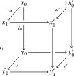
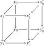

In this chapter, we fix once and for all a universe of small categories \(\Cat\).
Definition 20.3.1. A pre-Waldhausen category is a small category \(A\) equipped with two subcategories \[ wA\hookrightarrow A\quadtext{and} cA\hookrightarrow A \] with the following properties, where morphisms of \(A\) that belong to \(wA\) are called weak equivalences, whereas those belonging to \(cA\) are called cofibrations.
W0. The category \(A\) has an initial object \(*\). Furthermore, for any object \(x\) of \(A\), the map \(*\to a\) is a cofibration.
W1. For any object \(x\) of \(A\), the identity of \(a\) is both a weak equivalence and a cofibration.
W2. The family of cofibrations is stable under pushouts in \(A\).
W3. The family of trivial cofibrations (i.e. of maps that are both weak equivalences and cofibrations) is stable under pushouts.
W4 For any commutative cube in \(A\) of the form

with both maps \(i_0\) and \(i_1\) cofibrations and both the front face and the back face cocartesian, if the three maps \(u\), \(u'\) and \(v\) are weak equivalences, then so is \(v'\).
A Waldhausen category is a pre-Waldhausen such that its initial object happens to be a terminal object as well.
Pre-Waldhausen categories naturally form a subanima of \(\Fun(\pushout,\Cat)^\simeq\). A morphism of pre-Waldhausen categories is a morphism in \(\Fun(\pushout,\Cat)\), or equivalently, a functor \[ f\colon A\to B \] preserving weak equivalences as well as cofibrations, with the additional property that, for any pushout square in \(A\) the form with \(i\) (hence also \(i'\)) a cofibration, the associated commutative square is a pushout square in \(B\).
Pre-Waldhausen categories naturally form a category \(\WaldCat^{\mathrm{pre}}\), or rather a subcategory of \(\Fun(\pushout,\Cat)\).
Lemma 20.3.2. Let \(A\) be a category equipped with a subcategory \(cA\hookrightarrow A\) containing all identities and corresponding to a family of morphisms stable under pushouts in \(A\). Define a \(cA\)-cofibrant square as a commutative square in \(A\) of the form in which \(i\) (hence \(i'\) as well) is a map in \(cA\) and such that the induced map \(y\amalg_x x'\to y'\) is a map in \(cA\) as well. Then the family of \(cA\)-cofibrant squares forms a family of maps in \(\Fun([1],A)\) that is stable under composition as well as under pushouts.
Proof
Let us consider a composable pair of squares of the form each of then being \(cA\)-cofibrant. In the induced commutative diagram the upper square is cocartesian and so is the outer square, so that the lower square is cocartesian as well. In particular, the vertical map at the lowest right corner is in \(cA\). This implies that the map \(y\amalg_x x''\to y''\) is in \(cA\), since it is the composition of two maps in \(cA\).
Let us consider a commutative cube of the form

Construction 20.3.3. Given a pre-Waldhausen categories \(A\) and \(B\), we write \(\Wald(A,B)\) for the full subcategory of \(\Fun(A,B)\) whose objects are morphisms of pre-Waldhausen categories. In fact \(\Wald(A,B)\) is a Waldhausen category itself: one defines weak equivalences as the natural transformations between morphisms of Waldhausen categories \[ \alpha\colon f\to g \] such that \(\alpha_x\colon f(x)\to g(x)\) is a weak equivalence for any object \(x : A^\simeq\). Cofibrations are those natural transformations between morphisms of Waldhausen categories \[ \alpha\colon f\to g \] with the property that, for any cofibration \(i\colon x\to y\) in \(A\), the induced commutative square induces a cofibration of type \(f(y)\amalg_{f(x)}g(x)\to g(y)\) (the stability of these cofibrations under pushouts follows straight away from the preceding lemma).
A particular case of interest is \(A=[0]\star[1]\) for some \(n : \N\). A morphism \([0]\star[1]\to B\) literally is a commutative triangle of the form with \(u\) a cofibration. There is thus an equivalence from \(\Wald([0]\star[1],B)\) to the full subcategory of \(\Fun([1],B)\) whose objects are the cofibrations of \(B\). More generally, given \(n : \N\), we define \(B^{[n]}\) as the full subcategory of \(\Fun([n],B)\) whose objects are sequences of cofibrations of the form \[ x_0\to\cdots\to x_n \] in \(B\), the assignment \[ (x_0\to\cdots\to x_n)\mapsto(0\to x_0\to\cdots\to x_n) \] defines an equivalence \[ B^{[n]}\simeq\Wald([0]\star [n],B)\, . \]
Example 20.3.4. Any pointed small category with finite colimits is a Waldhausen category in which the weak equivalences are the isomorphisms and all morphisms are cofibrations. This observation defines a full embedding of the form \[ \RexCat_\bullet\hookrightarrow\WaldCat\, . \] Particular cases of interest are stable categories.
Example 20.3.5. If \(A\) is a Waldhausen category the so is \(\Fun(I,A)\) for any small category \(I\): we define weak equivalences (cofibration, resp.) as those natural transformations \(u\colon F\to G\) such that \(u_i\colon F_i\to G_i\) is a weak equivalence (a cofibration, resp.) for all objects \(i : I^\simeq\). We define \(w(I,A)\) as the full subcategory of \(\Fun(I,A)\) whose objects are the functors sending all maps in \(I\) to weak equivalences in \(A\). We define weak equivalences and cofibrations in \(w(I,A)\) as those maps that weka equivalences and cofibrations, respectively, in \(\Fun(I,A)\). This turns \(w(I,A)\) into a Waldhausen category.
Notation 20.3.6. For \(A : \WaldCat\) and \([n] : \N\) we write \[ w_n(A):=w([n],A)\, . \]